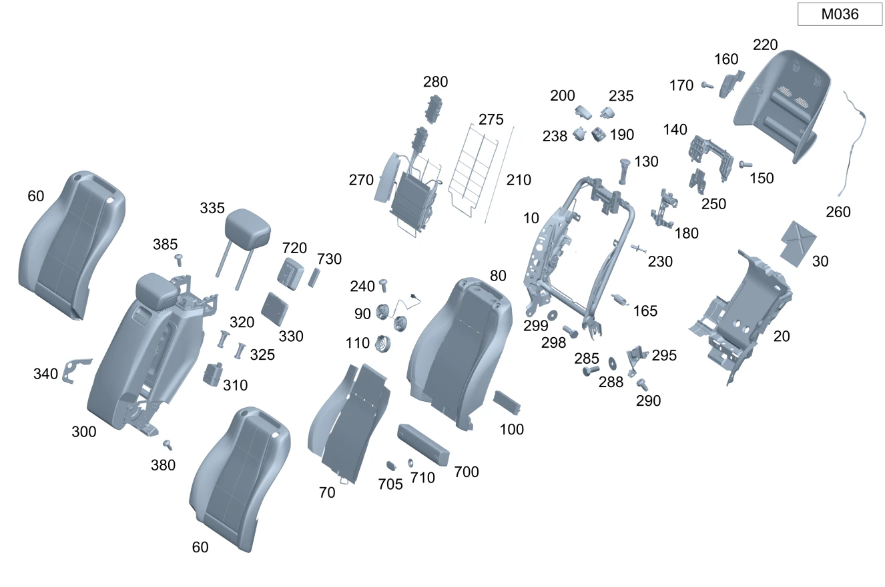

| № | Артикул | Название | Кол. | Примечание | Ограничение |
|---|---|---|---|---|---|
| 10 | A 167 920 11 18 | BACKREST SHELL (LEHNENSCHALE) | 1 | Спинка заднего сиденья слева | M036+453/M036+224+453 |
| 10 | A 167 920 12 18 | BACKREST SHELL (LEHNENSCHALE) | 1 | Спинка заднего сиденья справа | M036+453/M036+224+453 |
| 20 | A 167 682 89 02 | Шумоизоляция под зад.сид. (ABDAEMPFUNG FONDSITZ) | 1 | Под задним сиденьем слева | M036 |
| 20 | A 167 682 90 02 | Шумоизоляция под зад.сид. (ABDAEMPFUNG FONDSITZ) | 1 | Под задним сиденьем справа | M036 |
| 30 | A 167 682 78 02 | Шумоизоляция зад. стенки (ABDAEMPFUNG RUECKWAND) | 1 | Накладка задняя (правая сторона) | M036 |
| 30 | A 167 682 77 02 | Шумоизоляция зад. стенки (ABDAEMPFUNG RUECKWAND) | 1 | Накладка задняя (левая сторона) | M036 |
| 60 | A 167 920 53 04 | Обивка спинки сиденья (BEZUG FONDLEHNE) | 1 | Спинка заднего сиденья слева | 500A+M036+453 |
| 60 | A 167 920 29 12 | Обивка спинки сиденья (BEZUG FONDLEHNE) | 1 | Спинка заднего сиденья слева | 500A+M036+453+8U8 |
| 60 | A 167 920 87 06 | Обивка спинки сиденья (BEZUG FONDLEHNE) | 1 | Спинка заднего сиденья слева | 500A+M036+453+224 |
| 60 | A 167 920 88 06 | Обивка спинки сиденья (BEZUG FONDLEHNE) | 1 | Спинка заднего сиденья слева | 500A+M036+453+224+8U8 |
| 60 | A 167 920 55 23 | Обивка спинки сиденья | 1 | Спинка заднего сиденья слева | (510A/970A)+M036+453+(809/800/801/802/803/804/805/806) |
| 60 | A 167 920 91 26 | Обивка спинки сиденья | 1 | Спинка заднего сиденья слева | (510A/970A)+M036+453+(807/808/29X) |
| 60 | A 167 920 57 23 | Обивка спинки сиденья | 1 | Спинка заднего сиденья слева | (510A/970A)+M036+453+8U8+(809/800/801/802/803/804/805/806) |
| 60 | A 167 920 93 26 | Обивка спинки сиденья | 1 | Спинка заднего сиденья слева | (510A/970A)+M036+453+8U8+(807/808/29X) |
| 60 | A 167 920 51 23 | Обивка спинки сиденья (BEZUG FONDLEHNE) | 1 | Спинка заднего сиденья слева | (510A/970A)+M036+453+224+(809/800/801/802/803/804/805/806) |
| 60 | A 167 920 95 26 | Обивка спинки сиденья | 1 | Спинка заднего сиденья слева | (510A/970A)+M036+453+224+(807/808/29X) |
| 60 | A 167 920 59 23 | Обивка спинки сиденья | 1 | Спинка заднего сиденья слева | (510A/970A)+M036+453+224+8U8+(809/800/801/802/803/804/805/806) |
| 60 | A 167 920 97 26 | Обивка спинки сиденья | 1 | Спинка заднего сиденья слева | (510A/970A)+M036+453+224+8U8+(807/808/29X) |
| 60 | A 167 920 54 04 | Обивка спинки сиденья (BEZUG FONDLEHNE) | 1 | Спинка заднего сиденья справа | 500A+(M036+453/M036+453+224) |
| 60 | A 167 920 30 12 | Обивка спинки сиденья (BEZUG FONDLEHNE) | 1 | Спинка заднего сиденья справа | 500A+(M036+453/M036+453+224)+8U8 |
| 60 | A 167 920 56 23 | Обивка спинки сиденья (BEZUG FONDLEHNE) | 1 | Спинка заднего сиденья справа | (510A/970A)+(M036+453/M036+453+224)+(809/800/801/802/803/804/805/806) |
| 60 | A 167 920 96 26 | Обивка спинки сиденья | 1 | Спинка заднего сиденья справа | (510A/970A)+(M036+453/M036+453+224)+(807/808/29X) |
| 60 | A 167 920 58 23 | Обивка спинки сиденья | 1 | Спинка заднего сиденья справа | (510A/970A)+(M036+453/M036+453+224)+8U8+(809/800/801/802/803/804/805/806) |
| 60 | A 167 920 98 26 | Обивка спинки сиденья | 1 | Спинка заднего сиденья справа | (510A/970A)+(M036+453/M036+453+224)+8U8+(807/808/29X) |
| 70 | A 167 906 43 03 | Подогрев сидений (SITZHEIZUNG) | 1 | Заднее сиденье слева | 402+903+(M036+453/M036+224+453)+(809/800/801/802/803/804/805/806) |
| 70 | A 167 906 41 07 | Подогрев сидений (SITZHEIZUNG) | 1 | Заднее сиденье слева | 402+903+(M036+453/M036+224+453)+(809/800/801/802/803/804/805/806) |
| 70 | A 167 906 45 12 | Подогрев сидений (SITZHEIZUNG) | 1 | Заднее сиденье слева | 402+903+(M036+453/M036+224+453)+(809/800/801/802/803/804/805/806) |
| 70 | A 167 906 41 10 | Подогрев сидений (SITZHEIZUNG) | 1 | Заднее сиденье слева | 402+903+(M036+453/M036+224+453)+(807/808/29X) |
| 70 | A 167 906 44 03 | Подогрев сидений (SITZHEIZUNG) | 1 | Заднее сиденье справа | 402+903+((M036+453)/(M036+224+453))+(809/800/801/802/803/804/805/806) |
| 70 | A 167 906 42 07 | Подогрев сидений (SITZHEIZUNG) | 1 | Заднее сиденье справа | 402+903+(M036+453/M036+224+453)+(809/800/801/802/803/804/805/806) |
| 70 | A 167 906 46 12 | Подогрев сидений (SITZHEIZUNG) | 1 | Заднее сиденье справа | 402+903+(M036+453/M036+224+453)+(809/800/801/802/803/804/805/806) |
| 70 | A 167 906 40 10 | Подогрев сидений (SITZHEIZUNG) | 1 | Заднее сиденье справа | 402+903+(M036+453/M036+224+453)+(807/808/29X) |
| 80 | A 167 920 65 23 | Накладка спинки сиденья (AUFLAGE FONDLEHNE) | 1 | Спинка заднего сиденья слева | 402+406+M036+453+(809/800/801/802/803/804/805/806) |
| 80 | A 167 920 79 28 | Накладка спинки сиденья (AUFLAGE FONDLEHNE) | 1 | Спинка заднего сиденья слева | 402+406+M036+453+(809/800/801/802/803/804/805/806) |
| 80 | A 167 920 67 23 | Накладка спинки сиденья (AUFLAGE FONDLEHNE) | 1 | Спинка заднего сиденья слева | 402+406+M036+453+224+(809/800/801/802/803/804/805/806) |
| 80 | A 167 920 81 28 | Накладка спинки сиденья (AUFLAGE FONDLEHNE) | 1 | Спинка заднего сиденья слева | 402+406+M036+453+224+(809/800/801/802/803/804/805/806) |
| 80 | A 167 920 66 23 | Накладка спинки сиденья (AUFLAGE FONDLEHNE) | 1 | Спинка заднего сиденья справа | 402+(M036+453/M036+224+453)+(809/800/801/802/803/804/805/806) |
| 80 | A 167 920 66 23 | Накладка спинки сиденья (AUFLAGE FONDLEHNE) | 1 | Спинка заднего сиденья справа | 402+406+(M036+453/M036+453+224)+(809/800/801/802/803/804/805/806) |
| 80 | A 167 920 80 28 | Накладка спинки сиденья (AUFLAGE FONDLEHNE) | 1 | Спинка заднего сиденья справа | 402+406+(M036+453/M036+453+224)+(809/800/801/802/803/804/805/806) |
| 90 | A 099 906 51 01 | - Вентилятор (LUEFTER) | 1 | В подкладку левого сиденья | 402+(M036+453/M036+453+224) |
| 90 | A 099 906 82 00 | - Вентилятор (LUEFTER) | 1 | В подкладку левого сиденья | 402+(M036+453/M036+453+224) |
| 90 | A 099 906 51 01 | - Вентилятор (LUEFTER) | 1 | В подкладку правого сиденья | 402+(M036+453/M036+453+224) |
| 90 | A 099 906 82 00 | - Вентилятор (LUEFTER) | 1 | В подкладку правого сиденья | 402+(M036+453/M036+453+224) |
| 100 | A 222 900 04 11 | - Блок управления (STEUERGERAET) | 1 | Клапанный блок слева [697] ДЕТАЛЬ ПОСТАВЛЯЕТСЯ ТОЛЬКО/ИЛИ ТАКЖЕ КАК ЗАП.ЧАСТЬ | 406+((M036+453)/(M036+224+453))+(809/800/801/802/803/804/805/806) |
| 100 | A 222 900 04 11 | - Блок управления (STEUERGERAET) | 1 | Клапанный блок справа [697] ДЕТАЛЬ ПОСТАВЛЯЕТСЯ ТОЛЬКО/ИЛИ ТАКЖЕ КАК ЗАП.ЧАСТЬ | 406+((M036+453)/(M036+224+453))+(809/800/801/802/803/804/805/806) |
| 110 | A 222 838 00 00 | - Держатель (HALTER) | 2 | В подкладку левого сиденья | 402+(M036+453/M036+453+224) |
| 110 | A 217 838 00 00 | - Держатель (HALTER) | 2 | В подкладку левого сиденья | 402+(M036+453/M036+453+224) |
| 110 | A 222 838 00 00 | - Держатель (HALTER) | 2 | В подкладку правого сиденья | 402+(M036+453/M036+453+224) |
| 110 | A 217 838 00 00 | - Держатель (HALTER) | 2 | В подкладку правого сиденья | 402+(M036+453/M036+453+224) |
| 130 | A 000 970 05 41 | Направляющая подголовника | 2 | Без разблокировки левого сиденья | (M036+453)/(M036+224+453) |
| 130 | A 000 970 05 41 | Направляющая подголовника | 2 | Без разблокировки правого сиденья | (M036+453)/(M036+224+453) |
| 140 | A 222 920 79 05 | Держатель (HALTER) | 1 | К раме спинки, слева | 406+903+((M036+453)/(M036+224+453))+(809/800/801/802/803/804/805/806) |
| 140 | A 167 920 81 24 | Держатель (HALTER) | 1 | К раме спинки, слева | 406+903+((M036+453)/(M036+224+453))+(807/808/29X) |
| 140 | A 222 920 80 05 | Держатель (HALTER) | 1 | К раме спинки, справа | 406+903+((M036+453)/(M036+224+453))+(809/800/801/802/803/804/805/806) |
| 140 | A 167 920 80 24 | Держатель (HALTER) | 1 | К раме спинки, справа | 406+903+((M036+453)/(M036+224+453))+(807/808/29X) |
| 150 | A 001 984 64 29 | Болт с головкой торкс (SECHSRUNDSCHRAUBE) | 2 | Кронштейн к раме спинки \- слева; 5X16 | 406+903+((M036+453)/(M036+224+453)) |
| 150 | A 001 984 64 29 | Болт с головкой торкс (SECHSRUNDSCHRAUBE) | 2 | Кронштейн к раме спинки \- справа; 5X16 | 406+903+((M036+453)/(M036+224+453)) |
| 160 | A 222 820 00 10 | Концевой выключатель (ENDSCHALTER) | 1 | К раме спинки, слева | (M036+453)/(M036+224+453) |
| 160 | A 222 820 01 10 | Концевой выключатель (ENDSCHALTER) | 1 | К раме спинки, справа | (M036+453)/(M036+224+453) |
| 165 | A 000 993 56 11 | Пружина растяжения (ZUGFEDER) | 4 | Клапанный блок слева | (M036+453)/(M036+224+453) |
| 165 | A 000 993 56 11 | Пружина растяжения (ZUGFEDER) | 4 | Клапанный блок справа | (M036+453)/(M036+224+453) |
| 170 | A 002 984 22 29 | болт (SCHRAUBE) | 1 | Концевой выключатель к раме спинки (левая сторона); M5X19 | (M036+453)/(M036+224+453) |
| 170 | A 002 984 22 29 | болт (SCHRAUBE) | 1 | Концевой выключатель к раме спинки (правая сторона); M5X19 | (M036+453)/(M036+224+453) |
| 180 | A 000 970 43 26 | Регулировка выс. подгол. (HOEHENEINSTELLUNG KOPFST.) | 1 | Рама спинки слева | (M036+453)/(M036+224+453) |
| 180 | A 000 970 43 26 | Регулировка выс. подгол. (HOEHENEINSTELLUNG KOPFST.) | 1 | Рама спинки справа | (M036+453)/(M036+224+453) |
| 190 | A 222 920 44 07 | Держатель (HALTER) | 2 | НАПРАВЛЯЮЩАЯ РЕМНЯ СЛЕВА | M036+453 |
| 190 | A 222 920 44 07 | Держатель (HALTER) | 1 | НАПРАВЛЯЮЩАЯ РЕМНЯ СЛЕВА | M036+224+453 |
| 190 | A 222 920 44 07 | Держатель (HALTER) | 1 | НАПРАВЛЯЮЩАЯ РЕМНЯ СПРАВА | (M036+453)/(M036+224+453) |
| 200 | A 222 860 09 22 | Направляющая ремня | 1 | Левое сиденье, слева | (500A/510A/970A)+(M036+453/M036+453+224)+(809/800/801/802/803/804/805/806) |
| 200 | A 222 860 09 22 | Направляющая ремня | 1 | Левое сиденье, слева | (510A/970A)+(M036+453/M036+453+224)+(807/808/29X) |
| 200 | A 222 860 10 22 | Направляющая ремня | 1 | Левое сиденье, справа | (500A/510A/970A)+M036+453+(809/800/801/802/803/804/805/806) |
| 200 | A 222 860 10 22 | Направляющая ремня | 1 | Левое сиденье, справа | (510A/970A)+M036+453+(807/808/29X) |
| 200 | A 222 860 09 22 | Направляющая ремня | 1 | Правое сиденье, справа | (500A/510A/970A)+((M036+453)/(M036+224+453))+(809/800/801/802/803/804/805/806) |
| 200 | A 222 860 09 22 | Направляющая ремня | 1 | Правое сиденье, справа | (510A/970A)+((M036+453)/(M036+224+453))+(807/808/29X) |
| 210 | A 167 924 40 00 | Подвесной хомут (EINHAENGEBUEGEL) | 2 | Рама спинки слева | (M036+453)/(M036+224+453) |
| 210 | A 167 924 40 00 | Подвесной хомут (EINHAENGEBUEGEL) | 3 | Рама спинки справа | (M036+453)/(M036+224+453) |
| 210 | A 167 924 40 00 | Подвесной хомут (EINHAENGEBUEGEL) | 2 | Рама спинки справа | (M036+453)/(M036+224+453) |
| 220 | A 167 920 07 17 | Накладка спинки сиденья (ABDECKUNG SITZLEHNE) | 1 | Заднее сиденье слева | (500A/510A/970A)+(M036+453/M036+453+224)+402 |
| 220 | A 167 920 08 17 | Накладка спинки сиденья (ABDECKUNG SITZLEHNE) | 1 | Заднее сиденье справа | (500A/510A/970A)+(M036+453/M036+453+224)+402 |
| 230 | A 000 990 54 92 | Заклепка | 2 | Облицовка к раме спинки слева; 6 MM | ((M036+453)/(M036+224+453)) |
| 230 | A 000 990 54 92 | Заклепка | 2 | Облицовка к раме спинки справа; 6 MM | ((M036+453)/(M036+224+453)) |
| 235 | A 222 868 07 22 | Направляющая ремня | 2 | Сиденье слева, спереди | M036+453 |
| 235 | A 222 868 07 22 | Направляющая ремня | 1 | Сиденье слева, спереди | M036+453+224 |
| 235 | A 222 868 07 22 | Направляющая ремня | 1 | Правое сиденье, сзади | M036+453/M036+453+224 |
| 238 | A 222 868 08 22 | Направляющая ремня | 2 | Левое сиденье, сзади | M036+453 |
| 238 | A 222 868 08 22 | Направляющая ремня | 1 | Левое сиденье, сзади | M036+453+224 |
| 238 | A 222 868 08 22 | Направляющая ремня | 1 | Сиденье справа, спереди | M036+453/M036+453+224 |
| 240 | A 000 988 11 28 | Пробка (STOPFEN) | 2 | Крепление вентилятора (лев.) | 402+((M036+453)/(M036+224+453)) |
| 240 | A 000 988 11 28 | Пробка (STOPFEN) | 2 | Крепление вентилятора (прав.) | 402+((M036+453)/(M036+224+453)) |
| 250 | A 222 923 05 00 | Удерживающая пластина (HALTEPLATTE) | 1 | К раме спинки, слева | 402+((M036+453)/(M036+224+453)) |
| 250 | A 222 923 05 00 | Удерживающая пластина (HALTEPLATTE) | 1 | К раме спинки, справа | 402+((M036+453)/(M036+224+453)) |
| 260 | A 222 800 25 15 | Шланговый трубопровод (SCHLAUCHLEITUNG) | 1 | Клапанный блок слева | 406+((M036+453)/(M036+224+453)) |
| 260 | A 222 800 26 15 | Шланговый трубопровод (SCHLAUCHLEITUNG) | 1 | Клапанный блок справа | 406+((M036+453)/(M036+224+453)) |
| 270 | A 167 800 32 00 | Клапанный блок (VENTILBLOCK) | 1 | Спинка заднего сиденья слева | 406+((M036+453)/(M036+224+453))+(809/800/801/802/803/804/805/806) |
| 270 | A 167 800 51 00 | Клапанный блок | 1 | Спинка заднего сиденья слева | 406+((M036+453)/(M036+224+453))+(807/808/29X) |
| 270 | A 167 800 32 00 | Клапанный блок (VENTILBLOCK) | 1 | Спинка заднего сиденья справа | 406+((M036+453)/(M036+224+453))+(809/800/801/802/803/804/805/806) |
| 270 | A 167 800 51 00 | Клапанный блок | 1 | Спинка заднего сиденья справа | 406+((M036+453)/(M036+224+453))+(807/808/29X) |
| 275 | A 222 920 20 01 | - Вставка (EINLAGE) | 1 | Клапанный блок слева | 406+((M036+453)/(M036+224+453)) |
| 275 | A 222 920 20 01 | - Вставка (EINLAGE) | 1 | Клапанный блок справа | 406+((M036+453)/(M036+224+453)) |
| 280 | A 222 900 03 11 | - Блок управления (STEUERGERAET) | 1 | Клапанный блок слева [672] ДЕТАЛЬ ПОСЛЕ УСТАН.ПРОВЕРИТЬ НА АКТУАЛЬНОСТЬ "ПРОШИВНОГО" ПО | 406+((M036+453)/(M036+224+453))+(809/800/801/802/803/804/805/806) |
| 280 | A 222 900 03 11 | - Блок управления (STEUERGERAET) | 1 | Клапанный блок справа [672] ДЕТАЛЬ ПОСЛЕ УСТАН.ПРОВЕРИТЬ НА АКТУАЛЬНОСТЬ "ПРОШИВНОГО" ПО | 406+((M036+453)/(M036+224+453))+(809/800/801/802/803/804/805/806) |
| 285 | N 304017 008021 | Винт с 6-гранной головкой (SECHSKANTSCHRAUBE) | 1 | Рама спинки (левая сторона) к сегменту рамы; M8X20 [001701] ВНИМАНИЕ: ТАКЖЕ ЗАКАЗАТЬ ПОДКЛАДНУЮ ШАЙБУ | M036+453/M036+453+224 |
| 285 | N 304017 008021 | Винт с 6-гранной головкой (SECHSKANTSCHRAUBE) | 1 | Рама спинки (правая сторона) к сегменту рамы; M8X20 [001701] ВНИМАНИЕ: ТАКЖЕ ЗАКАЗАТЬ ПОДКЛАДНУЮ ШАЙБУ | M036+453/M036+453+224 |
| 288 | N 000000 003250 | Шайба (SCHEIBE) | 1 | Рама спинки (левая сторона) к сегменту рамы | M036+453/M036+453+224 |
| 288 | N 000000 003250 | Шайба (SCHEIBE) | 1 | Рама спинки (правая сторона) к сегменту рамы | M036+453/M036+453+224 |
| 290 | N 000000 004036 | Винт с 6-гр. глвк (SECHSRUNDSCHRAUBE) | 2 | Крепление рамы спинки (левая сторона) к кузову; M8X16 | M036+453/M036+453+224 |
| 290 | N 000000 004036 | Винт с 6-гр. глвк (SECHSRUNDSCHRAUBE) | 2 | Крепление рамы спинки (правая сторона) к кузову; M8X16 | M036+453/M036+453+224 |
| 295 | A 222 923 06 00 | Сегмент рамы (RAHMENSEGMENT) | 1 | Левое сиденье, снаружи | (M036+453)/(M036+224+453) |
| 295 | A 222 923 07 00 | Сегмент рамы (RAHMENSEGMENT) | 1 | НАРУЖНОЕ ПРАВОЕ СИДЕНЬЕ | (M036+453)/(M036+224+453) |
| 298 | N 304017 008021 | Винт с 6-гранной головкой (SECHSKANTSCHRAUBE) | 1 | К раме спинки, слева; M8X20 [001701] ВНИМАНИЕ: ТАКЖЕ ЗАКАЗАТЬ ПОДКЛАДНУЮ ШАЙБУ | M036+453/M036+453+224 |
| 298 | N 304017 008021 | Винт с 6-гранной головкой (SECHSKANTSCHRAUBE) | 1 | К раме спинки, справа; M8X20 [001701] ВНИМАНИЕ: ТАКЖЕ ЗАКАЗАТЬ ПОДКЛАДНУЮ ШАЙБУ | M036+453/M036+453+224 |
| 299 | N 000000 003250 | Шайба (SCHEIBE) | 1 | К раме спинки, слева | M036+453/M036+453+224 |
| 299 | N 000000 003250 | Шайба (SCHEIBE) | 1 | К раме спинки, справа | M036+453/M036+453+224 |
| 300 | A 167 970 33 01 | Подлокотник, откидной (ARMLEHNE KLAPPBAR) | 1 | Посередине | M036+500A+453+898+447+(809/800/801+-051)+-224 |
| 300 | A 167 970 06 03 | Подлокотник, откидной (ARMLEHNE KLAPPBAR) | 1 | Посередине | M036+(500A/510A)+453+898+447+(809/800/801+-051)+-224 |
| 300 | A 167 970 80 03 | Подлокотник, откидной (ARMLEHNE KLAPPBAR) | 1 | Посередине | M036+500A+453+898+447+801+051+-224 |
| 300 | A 167 970 00 05 | Подлокотник, откидной | 1 | Посередине | M036+(510A/970A)+453+898+447+(801+051/802/803)+-224 |
| 300 | A 167 970 97 03 | Подлокотник, откидной (ARMLEHNE KLAPPBAR) | 1 | Посередине | M036+500A+453+898+447+802+-224 |
| 300 | A 167 970 53 04 | Подлокотник, откидной (ARMLEHNE KLAPPBAR) | 1 | Посередине | M036+500A+453+898+447+803+-224 |
| 300 | A 167 970 92 03 | Подлокотник, откидной (ARMLEHNE KLAPPBAR) | 1 | Посередине | M036+510A+453+898+447+804+-(054/224) |
| 300 | A 167 970 34 01 | Подлокотник, откидной (ARMLEHNE KLAPPBAR) | 1 | Посередине | M036+500A+453+447+(809/800/801/802)+-224 |
| 300 | A 167 970 07 03 | Подлокотник, откидной (ARMLEHNE KLAPPBAR) | 1 | Посередине | M036+500A+453+447+(809/800/801/802)+-224 |
| 300 | A 167 970 00 05 | Подлокотник, откидной | 1 | Посередине | M036+(510A/970A)+453+898+447+(804+054/805+-055)+-224 |
| 300 | A 167 970 18 06 | Подлокотник, откидной | 1 | Посередине | M036+(510A/970A)+453+898+447+(805+055/806)+-224 |
| 300 | A 167 970 54 04 | Подлокотник, откидной (ARMLEHNE KLAPPBAR) | 1 | Посередине | M036+500A+453+447+803+-224 |
| 300 | A 167 970 93 03 | Подлокотник, откидной (ARMLEHNE KLAPPBAR) | 1 | Посередине | M036+510A+453+447+804+-(054/224) |
| 300 | A 167 970 01 05 | Подлокотник, откидной | 1 | Посередине | M036+(510A/970A)+453+447+(804+054/805+-055)+-224 |
| 300 | A 167 970 19 06 | Подлокотник, откидной | 1 | Посередине | M036+(510A/970A)+453+447+(805+055/806)+-224 |
| 300 | A 167 970 56 06 | Подлокотник, откидной | 1 | Посередине | M036+(510A/970A)+453+2K0+816+898+(807+057/808/29X)+-224 |
| 300 | A 167 970 52 06 | Подлокотник, откидной | 1 | Посередине | M036+(510A/970A)+453+898+816+(807/808/29X)+-224 |
| 300 | A 167 970 60 06 | Подлокотник, откидной | 1 | Посередине | M036+(510A/970A)+453+898+816+(807/808/29X)+-224 |
| 300 | A 167 970 60 06 | Подлокотник, откидной | 1 | Посередине | M036+(510A/970A)+453+898+816+807+-224 |
| 300 | A 167 970 66 06 | Подлокотник, откидной | 1 | Посередине | M036+(510A/970A)+453+898+816+(807+057/808/29X)+-224 |
| 310 | A 167 820 52 01 | - CONNECTION UNIT (MULTIMEDIA-ANSCHL.EINHEIT) | 1 | Зарядная розетка | M036+453+(809/800/801/802/803)+-224 |
| 310 | A 167 820 54 02 | - Мультимедийный модуль (MULTIMEDIA-ANSCHL.EINHEIT) | 1 | Зарядная розетка [697] ДЕТАЛЬ ПОСТАВЛЯЕТСЯ ТОЛЬКО/ИЛИ ТАКЖЕ КАК ЗАП.ЧАСТЬ | M036+453+(809/800/801/802/803)+-224 |
| 310 | A 167 820 19 03 | - Мультимедийный модуль (MULTIMEDIA-ANSCHL.EINHEIT) | 1 | Зарядная розетка | M036+453+-224 |
| 310 | A 167 820 36 04 | - Мультимедийный модуль (MULTIMEDIA-ANSCHL.EINHEIT) | 1 | Зарядная розетка | M036+453+-224 |
| 310 | A 167 820 36 04 | - Мультимедийный модуль (MULTIMEDIA-ANSCHL.EINHEIT) | 1 | Зарядная розетка | M036+453+(807/808/29X)+-224 |
| 320 | A 205 970 67 00 | - Направляющая подголовника (KOPFSTUETZENFUEHRUNG) | 1 | С МЕХАНИЗМОМ РАЗБЛОКИРОВКИ В ЦЕНТРЕ | M036+453+-224 |
| 325 | A 205 970 68 00 | - Направляющая подголовника (KOPFSTUETZENFUEHRUNG) | 1 | БЕЗ МЕХАНИЗМА РАЗБЛОКИРОВКИ В ЦЕНТРЕ | M036+453+-224 |
| 330 | A 167 900 22 12 | Блок управления (STEUERGERAET) | 1 | Устройство индикации | 447+-P08 |
| 330 | A 167 900 64 15 | Блок управления (STEUERGERAET) | 1 | Устройство индикации | 447+-P08 |
| 330 | A 167 900 10 20 | Блок управления (STEUERGERAET) | 1 | Устройство индикации [414] СТАРУЮ ДЕТАЛЬ УСТАНАВЛИВАТЬ БОЛЬШЕ НЕ РАЗРЕШАЕТСЯ | 447+-P08 |
| 330 | A 167 900 40 22 | Блок управления (STEUERGERAET) | 1 | Устройство индикации [414] СТАРУЮ ДЕТАЛЬ УСТАНАВЛИВАТЬ БОЛЬШЕ НЕ РАЗРЕШАЕТСЯ | 447+-P08 |
| 330 | A 167 900 53 23 | Блок управления (STEUERGERAET) | 1 | Устройство индикации | 447+-P08 |
| 330 | A 167 900 76 25 | Блок управления (STEUERGERAET) | 1 | Устройство индикации | 447+-P08 |
| 330 | A 223 900 15 08 | Блок управления (STEUERGERAET) | 1 | Устройство индикации | 447+-P08 |
| 330 | A 223 900 61 36 | Блок управления (STEUERGERAET) | 1 | Устройство индикации | 447+-(P08/830) |
| 330 | A 167 900 23 12 | Блок управления (STEUERGERAET) | 1 | Устройство индикации Рулевое управление: Влево | 447+830+-P08 |
| 330 | A 167 900 65 15 | Блок управления (STEUERGERAET) | 1 | Устройство индикации Рулевое управление: Влево | 447+830+-P08 |
| 330 | A 167 900 11 20 | Блок управления (STEUERGERAET) | 1 | Устройство индикации Рулевое управление: Влево [414] СТАРУЮ ДЕТАЛЬ УСТАНАВЛИВАТЬ БОЛЬШЕ НЕ РАЗРЕШАЕТСЯ | 447+830+-P08 |
| 330 | A 167 900 41 22 | Блок управления (STEUERGERAET) | 1 | Устройство индикации Рулевое управление: Влево [697] ДЕТАЛЬ ПОСТАВЛЯЕТСЯ ТОЛЬКО/ИЛИ ТАКЖЕ КАК ЗАП.ЧАСТЬ | 447+830+-P08 |
| 330 | A 167 900 54 23 | Блок управления (STEUERGERAET) | 1 | Устройство индикации Рулевое управление: Влево [697] ДЕТАЛЬ ПОСТАВЛЯЕТСЯ ТОЛЬКО/ИЛИ ТАКЖЕ КАК ЗАП.ЧАСТЬ | 447+830+-P08 |
| 330 | A 167 900 77 25 | Блок управления (STEUERGERAET) | 1 | Устройство индикации Рулевое управление: Влево | 447+830+-P08 |
| 330 | A 223 900 16 08 | Блок управления (STEUERGERAET) | 1 | Устройство индикации Рулевое управление: Влево | 447+830+-P08 |
| 330 | A 223 900 62 36 | Блок управления (STEUERGERAET) | 1 | Устройство индикации Рулевое управление: Влево | 447+830+-P08 |
| 330 | A 167 900 24 12 | Блок управления (STEUERGERAET) | 1 | Устройство индикации Рулевое управление: Влево | 447+524L+-P08 |
| 330 | A 167 900 66 15 | Блок управления (STEUERGERAET) | 1 | Устройство индикации Рулевое управление: Влево [414] СТАРУЮ ДЕТАЛЬ УСТАНАВЛИВАТЬ БОЛЬШЕ НЕ РАЗРЕШАЕТСЯ | 447+524L+-P08 |
| 330 | A 167 900 12 20 | Блок управления (STEUERGERAET) | 1 | Устройство индикации Рулевое управление: Влево | 447+524L+-P08 |
| 330 | A 167 900 20 21 | Блок управления (STEUERGERAET) | 1 | Устройство индикации Рулевое управление: Влево [414] СТАРУЮ ДЕТАЛЬ УСТАНАВЛИВАТЬ БОЛЬШЕ НЕ РАЗРЕШАЕТСЯ | 447+524L+-P08 |
| 330 | A 167 900 42 22 | Блок управления (STEUERGERAET) | 1 | Устройство индикации Рулевое управление: Влево [414] СТАРУЮ ДЕТАЛЬ УСТАНАВЛИВАТЬ БОЛЬШЕ НЕ РАЗРЕШАЕТСЯ | 447+524L+-P08 |
| 330 | A 167 900 55 23 | Блок управления (STEUERGERAET) | 1 | Устройство индикации Рулевое управление: Влево | 447+524L+-P08 |
| 330 | A 167 900 78 25 | Блок управления (STEUERGERAET) | 1 | Устройство индикации Рулевое управление: Влево | 447+524L+-P08 |
| 330 | A 223 900 61 36 | Блок управления (STEUERGERAET) | 1 | Устройство индикации Рулевое управление: Влево | 447+524L+-P08 |
| 330 | A 223 900 15 08 | Блок управления (STEUERGERAET) | 1 | Устройство индикации | 447+(804/805/806)+-P08 |
| 330 | A 223 900 61 36 | Блок управления (STEUERGERAET) | 1 | Устройство индикации | 447+(804/805/806)+-P08 |
| 330 | A 223 900 90 38 | Блок управления (STEUERGERAET) | 1 | Устройство индикации | 447+(804/805/806)+-(P08/830) |
| 330 | A 223 900 07 40 | Блок управления (STEUERGERAET) | 1 | Устройство индикации | 447+(804/805/806)+-(P08/830) |
| 330 | A 223 900 24 43 | Блок управления (STEUERGERAET) | 1 | Устройство индикации | 447+(804/805/806)+-(P08/830) |
| 330 | A 223 900 64 44 | Блок управления (STEUERGERAET) | 1 | Устройство индикации | 447+(804/805/806)+-(P08/830) |
| 330 | A 223 900 15 08 | Блок управления (STEUERGERAET) | 1 | Устройство индикации Рулевое управление: Влево | 447+524L+(804/805/806)+-P08 |
| 330 | A 223 900 61 36 | Блок управления (STEUERGERAET) | 1 | Устройство индикации Рулевое управление: Влево | 447+524L+(804/805/806)+-P08 |
| 330 | A 223 900 16 08 | Блок управления (STEUERGERAET) | 1 | Устройство индикации Рулевое управление: Влево | 447+830+(804/805/806)+-P08 |
| 330 | A 223 900 62 36 | Блок управления (STEUERGERAET) | 1 | Устройство индикации Рулевое управление: Влево | 447+830+(804/805/806)+-P08 |
| 330 | A 223 900 91 38 | Блок управления (STEUERGERAET) | 1 | Устройство индикации Рулевое управление: Влево | 447+830+(804/805/806)+-P08 |
| 330 | A 223 900 91 38 | Блок управления (STEUERGERAET) | 1 | Устройство индикации Рулевое управление: Влево | 447+830+-P08 |
| 330 | A 223 900 08 40 | Блок управления (STEUERGERAET) | 1 | Устройство индикации Рулевое управление: Влево | 447+830+-P08 |
| 330 | A 223 900 25 43 | Блок управления (STEUERGERAET) | 1 | Устройство индикации Рулевое управление: Влево | 447+830+-P08 |
| 330 | A 223 900 65 44 | Блок управления (STEUERGERAET) | 1 | Устройство индикации Рулевое управление: Влево | 447+830+-P08 |
| 335 | A 167 970 16 04 | - Подголовник (KOPFSTUETZE) | 1 | Подлокотник откидной [414] СТАРУЮ ДЕТАЛЬ УСТАНАВЛИВАТЬ БОЛЬШЕ НЕ РАЗРЕШАЕТСЯ | M036+453+830 |
| 335 | A 167 970 28 06 | - Подголовник | 1 | Подлокотник откидной | M036+453+830 |
| 335 | A 167 970 20 03 | - Подголовник (KOPFSTUETZE) | 1 | Подлокотник откидной [414] СТАРУЮ ДЕТАЛЬ УСТАНАВЛИВАТЬ БОЛЬШЕ НЕ РАЗРЕШАЕТСЯ | M036+453+-830 |
| 335 | A 167 970 29 06 | - Подголовник | 1 | Подлокотник откидной | M036+453+-830 |
| 340 | A 167 920 94 21 | - Облицовка рамы спинки | 1 | Слева и справа снаружи | M036+453 |
| 380 | N 000000 001476 | Винт с 6-гр. глвк (SECHSRUNDSCHRAUBE) | 4 | Подлокотник к остову кузова (центральная зона); M6X16 | M036+453+-224 |
| 385 | N 000000 001476 | Винт с 6-гр. глвк (SECHSRUNDSCHRAUBE) | 2 | Подлокотник к задней стенке; M6X16 | M036+453+-224 |
| 510 | A 167 920 59 15 | Обивка спинки сиденья | 1 | Спинка заднего сиденья слева | (550A/850A)+224+(809/800/801/802/803)+-453 |
| 510 | A 167 920 59 15 | Обивка спинки сиденья | 1 | Спинка заднего сиденья слева | 550A+224+-(809/800/801/802/803/453) |
| 510 | A 167 920 61 15 | Обивка спинки сиденья | 1 | Спинка заднего сиденья слева | (550A/850A)+224+293+(809/800/801/802/803)+-453 |
| 510 | A 167 920 61 15 | Обивка спинки сиденья | 1 | Спинка заднего сиденья слева | 550A+224+293+-(809/800/801/802/803/453) |
| 510 | A 167 920 63 16 | Обивка спинки сиденья (BEZUG FONDLEHNE) | 1 | Спинка заднего сиденья слева | 560A+224+-453 |
| 510 | A 167 920 68 16 | Обивка спинки сиденья (BEZUG FONDLEHNE) | 1 | Спинка заднего сиденья слева | 560A+224+293+-453 |
| 510 | A 167 920 67 03 | Обивка спинки сиденья (BEZUG FONDLEHNE) | 1 | Спинка заднего сиденья слева | 110A+224+(809/800/801/802+-052)+-453 |
| 510 | A 167 920 88 23 | Обивка спинки сиденья (BEZUG FONDLEHNE) | 1 | Спинка заднего сиденья слева | 110A+224+(802+052/803)+-453 |
| 510 | A 167 920 88 23 | Обивка спинки сиденья (BEZUG FONDLEHNE) | 1 | Спинка заднего сиденья слева | 110A+224+-(809/800/801/802/803/453) |
| 510 | A 167 920 15 04 | Обивка спинки сиденья (BEZUG FONDLEHNE) | 1 | Спинка заднего сиденья слева | 110A+224+293+(809/800/801/802+-052)+-453 |
| 510 | A 167 920 84 23 | Обивка спинки сиденья | 1 | Спинка заднего сиденья слева | 110A+224+293+(802+052/803)+-453 |
| 510 | A 167 920 84 23 | Обивка спинки сиденья | 1 | Спинка заднего сиденья слева | 110A+224+293+-(809/800/801/802/803/453) |
| 510 | A 167 920 80 27 | Обивка спинки сиденья | 1 | Спинка заднего сиденья слева | 140A+224+(807/808/29X)+-453 |
| 510 | A 167 920 74 27 | Обивка спинки сиденья | 1 | Спинка заднего сиденья слева | 140A+224+293+(807/808/29X)+-453 |
| 510 | A 167 920 97 11 | Обивка спинки сиденья (BEZUG FONDLEHNE) | 1 | Спинка заднего сиденья слева | 200A+(205A/215A)+224+-453 |
| 510 | A 167 920 97 11 | Обивка спинки сиденья (BEZUG FONDLEHNE) | 1 | Спинка заднего сиденья слева | 200A+215A+224+-453 |
| 510 | A 167 920 97 11 | Обивка спинки сиденья (BEZUG FONDLEHNE) | 1 | Спинка заднего сиденья слева | 200A+(215A/225A)+224+-453 |
| 510 | A 167 920 87 26 | Обивка спинки сиденья | 1 | Спинка заднего сиденья слева | 230A+235A+224+(807/808/29X)+-453 |
| 510 | A 167 920 01 12 | Обивка спинки сиденья (BEZUG FONDLEHNE) | 1 | Спинка заднего сиденья слева | 200A+(205A/215A)+224+293+-453 |
| 510 | A 167 920 01 12 | Обивка спинки сиденья (BEZUG FONDLEHNE) | 1 | Спинка заднего сиденья слева | 200A+215A+224+293+-453 |
| 510 | A 167 920 01 12 | Обивка спинки сиденья (BEZUG FONDLEHNE) | 1 | Спинка заднего сиденья слева | 200A+(215A/225A)+224+293+-453 |
| 510 | A 167 920 63 26 | Обивка спинки сиденья | 1 | Спинка заднего сиденья слева | 230A+235A+224+293+(807/808/29X)+-453 |
| 510 | A 167 920 97 03 | Обивка спинки сиденья (BEZUG FONDLEHNE) | 1 | Спинка заднего сиденья слева | 200A+224+-453 |
| 510 | A 167 920 89 26 | Обивка спинки сиденья | 1 | Спинка заднего сиденья слева | 230A+224+(807/808/29X)+-453 |
| 510 | A 167 920 01 04 | Обивка спинки сиденья (BEZUG FONDLEHNE) | 1 | Спинка заднего сиденья слева | 200A+224+293+-453 |
| 510 | A 167 920 61 26 | Обивка спинки сиденья | 1 | Спинка заднего сиденья слева | 230A+224+293+(807/808/29X)+-453 |
| 510 | A 167 920 13 04 | Обивка спинки сиденья (BEZUG FONDLEHNE) | 1 | Спинка заднего сиденья слева | 500A+224+293+-453 |
| 510 | A 167 920 09 27 | Обивка спинки сиденья | 1 | Спинка заднего сиденья слева | 500A+224+293+(807/808/29X)+-453 |
| 510 | A 167 920 39 25 | Обивка спинки сиденья | 1 | Спинка заднего сиденья слева | 570A+224+(807/808/29X)+-453 |
| 510 | A 167 920 41 25 | Обивка спинки сиденья | 1 | Спинка заднего сиденья слева | 570A+224+293+(807/808/29X)+-453 |
| 510 | A 167 920 50 25 | Обивка спинки сиденья | 1 | Спинка заднего сиденья слева | 580A+224+(807/808/29X)+-453 |
| 510 | A 167 920 51 25 | Обивка спинки сиденья | 1 | Спинка заднего сиденья слева | 580A+224+293+(807/808/29X)+-453 |
| 510 | A 167 920 60 15 | Обивка спинки сиденья | 1 | Спинка заднего сиденья справа | (550A/850A)+224+(809/800/801/802/803)+-453 |
| 510 | A 167 920 60 15 | Обивка спинки сиденья | 1 | Спинка заднего сиденья справа | 550A+224+-(809/800/801/802/803/453) |
| 510 | A 167 920 62 15 | Обивка спинки сиденья (BEZUG FONDLEHNE) | 1 | Спинка заднего сиденья справа | (550A/850A)+224+293+(809/800/801/802/803)+-453 |
| 510 | A 167 920 62 15 | Обивка спинки сиденья (BEZUG FONDLEHNE) | 1 | Спинка заднего сиденья справа | 550A+224+293+-(809/800/801/802/803/453) |
| 510 | A 167 920 89 16 | Обивка спинки сиденья (BEZUG FONDLEHNE) | 1 | Спинка заднего сиденья справа | (809/800/801)+560A+224+-453 |
| 510 | A 167 920 94 16 | Обивка спинки сиденья (BEZUG FONDLEHNE) | 1 | Спинка заднего сиденья справа | (809/800/801)+560A+224+293+-453 |
| 510 | A 167 920 89 16 | Обивка спинки сиденья (BEZUG FONDLEHNE) | 1 | Спинка заднего сиденья справа | (802/803/804/805/806)+560A+224+-453 |
| 510 | A 167 920 94 16 | Обивка спинки сиденья (BEZUG FONDLEHNE) | 1 | Спинка заднего сиденья справа | (802/803/804/805/806)+560A+224+293+-453 |
| 510 | A 167 920 68 03 | Обивка спинки сиденья (BEZUG FONDLEHNE) | 1 | Спинка заднего сиденья справа | 110A+224+(809/800/801/802+-052)+-453 |
| 510 | A 167 920 90 23 | Обивка спинки сиденья (BEZUG FONDLEHNE) | 1 | Спинка заднего сиденья справа | 110A+224+(802+052/803)+-453 |
| 510 | A 167 920 90 23 | Обивка спинки сиденья (BEZUG FONDLEHNE) | 1 | Спинка заднего сиденья справа | 110A+224+-(809/800/801/802/803/453) |
| 510 | A 167 920 16 04 | Обивка спинки сиденья (BEZUG FONDLEHNE) | 1 | Спинка заднего сиденья справа | 110A+224+293+(809/800/801/802+-052)+-453 |
| 510 | A 167 920 85 23 | Обивка спинки сиденья (BEZUG FONDLEHNE) | 1 | Спинка заднего сиденья справа | 110A+224+293+(802+052/803)+-453 |
| 510 | A 167 920 85 23 | Обивка спинки сиденья (BEZUG FONDLEHNE) | 1 | Спинка заднего сиденья справа | 110A+224+293+-(809/800/801/802/803/453) |
| 510 | A 167 920 84 27 | Обивка спинки сиденья | 1 | Спинка заднего сиденья справа | 140A+224+(807/808/29X)+-453 |
| 510 | A 167 920 75 27 | Обивка спинки сиденья | 1 | Спинка заднего сиденья справа | 140A+224+293+(807/808/29X)+-453 |
| 510 | A 167 920 98 03 | Обивка спинки сиденья (BEZUG FONDLEHNE) | 1 | Спинка заднего сиденья справа | 200A+224+-453 |
| 510 | A 167 920 88 26 | Обивка спинки сиденья | 1 | Спинка заднего сиденья справа | 230A+224+(807/808/29X)+-453 |
| 510 | A 167 920 98 11 | Обивка спинки сиденья (BEZUG FONDLEHNE) | 1 | Спинка заднего сиденья справа | 200A+(205A/215A)+224+-453 |
| 510 | A 167 920 98 11 | Обивка спинки сиденья (BEZUG FONDLEHNE) | 1 | Спинка заднего сиденья справа | 200A+215A+224+-453 |
| 510 | A 167 920 98 11 | Обивка спинки сиденья (BEZUG FONDLEHNE) | 1 | Спинка заднего сиденья справа | 200A+(215A/225A)+224+-453 |
| 510 | A 167 920 90 26 | Обивка спинки сиденья | 1 | Спинка заднего сиденья справа | 230A+235A+224+(807/808/29X)+-453 |
| 510 | A 167 920 02 04 | Обивка спинки сиденья (BEZUG FONDLEHNE) | 1 | Спинка заднего сиденья справа | 200A+224+293+-453 |
| 510 | A 167 920 62 26 | Обивка спинки сиденья | 1 | Спинка заднего сиденья справа | 230A+224+293+(807/808/29X)+-453 |
| 510 | A 167 920 02 12 | Обивка спинки сиденья (BEZUG FONDLEHNE) | 1 | Спинка заднего сиденья справа | 200A+(205A/215A)+224+293+-453 |
| 510 | A 167 920 02 12 | Обивка спинки сиденья (BEZUG FONDLEHNE) | 1 | Спинка заднего сиденья справа | 200A+215A+224+293+-453 |
| 510 | A 167 920 02 12 | Обивка спинки сиденья (BEZUG FONDLEHNE) | 1 | Спинка заднего сиденья справа | 200A+(215A/225A)+224+293+-453 |
| 510 | A 167 920 64 26 | Обивка спинки сиденья | 1 | Спинка заднего сиденья справа | 230A+235A+224+293+(807/808/29X)+-453 |
| 510 | A 167 920 14 04 | Обивка спинки сиденья (BEZUG FONDLEHNE) | 1 | Спинка заднего сиденья справа | 500A+224+293+-453 |
| 510 | A 167 920 10 27 | Обивка спинки сиденья | 1 | Спинка заднего сиденья справа | 500A+224+293+(807/808/29X)+-453 |
| 510 | A 167 920 68 25 | Обивка спинки сиденья | 1 | Спинка заднего сиденья справа | 570A+224+(807/808/29X)+-453 |
| 510 | A 167 920 70 25 | Обивка спинки сиденья | 1 | Спинка заднего сиденья справа | 570A+224+293+(807/808/29X)+-453 |
| 510 | A 167 920 81 25 | Обивка спинки сиденья | 1 | Спинка заднего сиденья справа | 580A+224+(807/808/29X)+-453 |
| 510 | A 167 920 82 25 | Обивка спинки сиденья | 1 | Спинка заднего сиденья справа | 580A+224+293+(807/808/29X)+-453 |
| 520 | A 167 906 85 00 | Подогрев сидений (SITZHEIZUNG) | 1 | Спинка заднего сиденья слева | 224+872+(110A/200A/500A/550A/560A/800A/850A)+-453 |
| 520 | A 167 906 78 00 | Подогрев сидений (SITZHEIZUNG) | 1 | Спинка заднего сиденья слева | 224+872+(110A/200A/500A/550A/560A/850A)+-453 |
| 520 | A 167 906 50 07 | Подогрев сидений (SITZHEIZUNG) | 1 | Спинка заднего сиденья слева | 224+872+(110A/200A/500A/940A/550A/560A/850A/960A)+-453 |
| 520 | A 167 906 40 11 | Подогрев сидений (SITZHEIZUNG) | 1 | Спинка заднего сиденья слева | 224+872+(140A/230A/500A/570A/580A)+(807/808/29X)+-453 |
| 520 | A 167 906 85 00 | Подогрев сидений (SITZHEIZUNG) | 1 | Спинка заднего сиденья справа | 224+872+(110A/200A/500A/550A/560A/800A/850A)+-453 |
| 520 | A 167 906 78 00 | Подогрев сидений (SITZHEIZUNG) | 1 | Спинка заднего сиденья справа | 224+872+(110A/200A/500A/550A/560A/800A/850A)+-453 |
| 520 | A 167 906 50 07 | Подогрев сидений (SITZHEIZUNG) | 1 | Спинка заднего сиденья справа | 224+872+(110A/200A/500A/940A/550A/560A/960A)+-453 |
| 520 | A 167 906 40 11 | Подогрев сидений (SITZHEIZUNG) | 1 | Спинка заднего сиденья справа | 224+872+(140A/230A/500A/570A/580A)+(807/808/29X)+-453 |
| 530 | A 167 920 13 16 | Накладка спинки сиденья (AUFLAGE FONDLEHNE) | 1 | Спинка заднего сиденья слева | 224+-453 |
| 530 | A 167 920 15 16 | Накладка спинки сиденья (AUFLAGE FONDLEHNE) | 1 | Спинка заднего сиденья слева | 224+293+-453 |
| 530 | A 167 920 14 16 | Накладка спинки сиденья (AUFLAGE FONDLEHNE) | 1 | Спинка заднего сиденья справа | 224+-453 |
| 530 | A 167 920 16 16 | Накладка спинки сиденья (AUFLAGE FONDLEHNE) | 1 | Спинка заднего сиденья справа | 224+293+-453 |
| 540 | A 463 984 00 61 | Крепежная скоба (BEFESTIGUNGSKLAMMER) | 13 | Крепление спинки слева | 224+-453 |
| 540 | A 463 984 00 61 | Крепежная скоба (BEFESTIGUNGSKLAMMER) | 14 | Крепление спинки слева | 224+-453 |
| 540 | A 463 984 00 61 | Крепежная скоба (BEFESTIGUNGSKLAMMER) | 13 | Крепление спинки справа | 224+-453 |
| 540 | A 463 984 00 61 | Крепежная скоба (BEFESTIGUNGSKLAMMER) | 14 | Крепление спинки справа | 224+-453 |
| 545 | A 167 914 30 00 | Подвесной хомут (EINHAENGEBUEGEL) | 2 | КРЕПЛЕНИЕ ОБИВКИ К РАМЕ СПИНКИ СЛЕВА | (224/226)+-453 |
| 545 | A 167 914 30 00 | Подвесной хомут (EINHAENGEBUEGEL) | 2 | КРЕПЛЕНИЕ ОБИВКИ К РАМЕ СПИНКИ СПРАВА | (224/226)+-453 |
| 550 | A 167 924 11 00 | Обивка спинки сиденья (BELAG FONDLEHNE) | 1 | Спинка заднего сиденья слева | 224/226+-453 |
| 550 | A 296 924 03 00 | Обивка спинки сиденья (BELAG FONDLEHNE) | 1 | Спинка заднего сиденья слева | 224 |
| 550 | A 167 924 12 00 | Обивка спинки сиденья (BELAG FONDLEHNE) | 1 | Спинка заднего сиденья справа | (224/226)+-453 |
| 550 | A 296 924 04 00 | Обивка спинки сиденья (BELAG FONDLEHNE) | 1 | Спинка заднего сиденья справа | (224/226)+-453 |
| 560 | A 167 920 93 04 | Ручка разблокировки (ENTRIEGELUNGSGRIFF) | 1 | Сиденье слева, снаружи | (224/226)+-453 |
| 560 | A 167 920 10 09 | Ручка разблокировки (ENTRIEGELUNGSGRIFF) | 1 | Сиденье справа, снаружи | (224/226)+-453 |
| 570 | A 000 991 91 32 | Вытяжная заклепка (BLINDNIET) | 2 | КРЕПЛЕНИЕ ЛЕВОЙ РУЧКИ РАЗБЛОКИРОВКИ | (226/224)+(809/800/801/802/803/804/805/806)+-453 |
| 570 | A 000 991 91 32 | Вытяжная заклепка (BLINDNIET) | 2 | КРЕПЛЕНИЕ ПРАВОЙ РУЧКИ РАЗБЛОКИРОВКИ | (226/224)+(809/800/801/802/803/804/805/806)+-453 |
| 575 | A 167 920 65 12 | Накладка спинки сиденья (ABDECKUNG SITZLEHNE) | 1 | СВЕРХУ, ЛЕВОЕ СИДЕНЬЕ | 226 |
| 575 | A 167 920 65 12 | Накладка спинки сиденья (ABDECKUNG SITZLEHNE) | 1 | СВЕРХУ, ПРАВОЕ СИДЕНЬЕ | (224/226)+-453 |
| 578 | A 000 991 91 32 | Вытяжная заклепка (BLINDNIET) | 1 | КРЕПЛЕНИЕ КРЫШКИ СПРАВА | (224/226)+(809/800/801/802/803/804/805/806)+-453 |
| 580 | A 167 970 62 00 | Направляющая подголовника (KOPFSTUETZENFUEHRUNG) | 2 | Без разблокировки левого сиденья | 224+-453 |
| 580 | A 167 970 62 00 | Направляющая подголовника (KOPFSTUETZENFUEHRUNG) | 2 | Без разблокировки правого сиденья | (224/226)+-453 |
| 585 | A 167 905 34 02 | Блок выключателей | 1 | Левое сиденье, снаружи | 226+901+-453 |
| 585 | A 167 905 34 02 | Блок выключателей | 1 | Правое сиденье снаружи | (226/224+901)+-453 |
| 585 | A 167 905 84 01 | Блок выключателей | 1 | Сиденье справа, снаружи | 224+-453 |
| 600 | A 167 900 05 00 | Блок управления (STEUERGERAET) | 1 | Левое сиденье, сзади [697] ДЕТАЛЬ ПОСТАВЛЯЕТСЯ ТОЛЬКО/ИЛИ ТАКЖЕ КАК ЗАП.ЧАСТЬ | 903+(809/800+-050) |
| 600 | A 167 900 59 08 | Блок управления (STEUERGERAET) | 1 | Левое сиденье, сзади [672] ДЕТАЛЬ ПОСЛЕ УСТАН.ПРОВЕРИТЬ НА АКТУАЛЬНОСТЬ "ПРОШИВНОГО" ПО [697] ДЕТАЛЬ ПОСТАВЛЯЕТСЯ ТОЛЬКО/ИЛИ ТАКЖЕ КАК ЗАП.ЧАСТЬ | 903+(800+050) |
| 600 | A 167 900 88 12 | Блок управления (STEUERGERAET) | 1 | Левое сиденье, сзади [697] ДЕТАЛЬ ПОСТАВЛЯЕТСЯ ТОЛЬКО/ИЛИ ТАКЖЕ КАК ЗАП.ЧАСТЬ | 903+(800+050) |
| 600 | A 167 900 05 00 | Блок управления (STEUERGERAET) | 1 | Правое сиденье, сзади [697] ДЕТАЛЬ ПОСТАВЛЯЕТСЯ ТОЛЬКО/ИЛИ ТАКЖЕ КАК ЗАП.ЧАСТЬ | 903+(809/800+-050) |
| 600 | A 167 900 59 08 | Блок управления (STEUERGERAET) | 1 | Правое сиденье, сзади [672] ДЕТАЛЬ ПОСЛЕ УСТАН.ПРОВЕРИТЬ НА АКТУАЛЬНОСТЬ "ПРОШИВНОГО" ПО [697] ДЕТАЛЬ ПОСТАВЛЯЕТСЯ ТОЛЬКО/ИЛИ ТАКЖЕ КАК ЗАП.ЧАСТЬ | 903+(800+050) |
| 600 | A 167 900 88 12 | Блок управления (STEUERGERAET) | 1 | Правое сиденье, сзади [697] ДЕТАЛЬ ПОСТАВЛЯЕТСЯ ТОЛЬКО/ИЛИ ТАКЖЕ КАК ЗАП.ЧАСТЬ | 800+050+903 |
| 620 | A 167 923 26 00 | Усиливающий элемент (VERSTAERKUNG) | 1 | СВЕРХУ, ЛЕВОЕ СИДЕНЬЕ | 224+-453 |
| 620 | A 167 923 27 00 | Усиливающий элемент (VERSTAERKUNG) | 1 | СВЕРХУ, ПРАВОЕ СИДЕНЬЕ | 224+-453 |
| 625 | A 000 991 91 32 | Вытяжная заклепка (BLINDNIET) | 6 | КРЕПЛЕНИЕ УСИЛИТЕЛЯ СЛЕВА | 224+(809/800/801/802/803/804/805/806)+-453 |
| 625 | A 000 991 91 32 | Вытяжная заклепка (BLINDNIET) | 5 | КРЕПЛЕНИЕ УСИЛИТЕЛЯ СПРАВА | 224+(809/800/801/802/803/804/805/806)+-453 |
| 630 | A 167 920 57 12 | Держатель (HALTER) | 1 | Внешн. (левое сиденье) | (224/226)+293+-453 |
| 630 | A 167 920 58 12 | Держатель (HALTER) | 1 | Внешн. (правое сиденье) | (224/226)+293+-453 |
| 640 | N 000000 007932 | Винт с 6-гр. глвк (SECHSRUNDSCHRAUBE) | 2 | КРОНШТЕЙН ПОДУШКИ БЕЗОПАСНОСТИ НА НАРУЖНОЙ СТОРОНЕ КАРКАСА ЛЕВОГО СИДЕНЬЯ; M6X12 | (224/226)+293+-453 |
| 640 | N 000000 007932 | Винт с 6-гр. глвк (SECHSRUNDSCHRAUBE) | 2 | КРОНШТЕЙН ПОДУШКИ БЕЗОПАСНОСТИ НА НАРУЖНОЙ СТОРОНЕ КАРКАСА ПРАВОГО СИДЕНЬЯ; M6X12 | (224/226)+293+-453 |
| 650 | A 167 860 17 01 | Боковая НПБ (SEITENAIRBAG) | 1 | Левое сиденье, снаружи | (224/226)+293+-453 |
| 650 | A 167 860 18 01 | Боковая НПБ (SEITENAIRBAG) | 1 | НАРУЖНОЕ ПРАВОЕ СИДЕНЬЕ | (224/226)+293+-453 |
| 660 | N 000000 008272 | Гайка (MUTTER) | 1 | КРЕПЛЕНИЕ ЛЕВОЙ БОКОВОЙ ПОДУШКИ БЕЗОПАСНОСТИ; M6 | (224/226)+293+-453 |
| 660 | N 000000 008272 | Гайка (MUTTER) | 1 | КРЕПЛЕНИЕ ПРАВОЙ БОКОВОЙ ПОДУШКИ БЕЗОПАСНОСТИ; M6 | (224/226)+293+-453 |
| 670 | N 000000 003552 | Винт с 6-гр. глвк (SECHSRUNDSCHRAUBE) | 1 | Сиденье слева, изнутри; M8X25 | 224+-453 |
| 670 | N 000000 003552 | Винт с 6-гр. глвк (SECHSRUNDSCHRAUBE) | 1 | Сиденье справа, изнутри; M8X25 | 224+-453 |
| 680 | A 167 970 47 00 | Подлокотник, откидной (ARMLEHNE KLAPPBAR) | 1 | Левое сиденье, изнутри | 224+110A+-453 |
| 680 | A 167 970 97 00 | Подлокотник, откидной (ARMLEHNE KLAPPBAR) | 1 | Левое сиденье, изнутри | 224+200A+-453 |
| 680 | A 167 970 21 03 | Подлокотник, откидной (ARMLEHNE KLAPPBAR) | 1 | Левое сиденье, изнутри | 224+200A+-453 |
| 680 | A 167 970 03 01 | Подлокотник, откидной (ARMLEHNE KLAPPBAR) | 1 | Левое сиденье, изнутри | 224+(205A/215A)+200A+-453 |
| 680 | A 167 970 03 01 | Подлокотник, откидной (ARMLEHNE KLAPPBAR) | 1 | Левое сиденье, изнутри | 224+(215A/225A)+200A+-453 |
| 680 | A 167 970 47 00 | Подлокотник, откидной (ARMLEHNE KLAPPBAR) | 1 | Левое сиденье, изнутри | 224+(215A/225A)+200A+-453 |
| 680 | A 167 970 23 03 | Подлокотник, откидной (ARMLEHNE KLAPPBAR) | 1 | Левое сиденье, изнутри | 224+(500A/550A/560A/850A)+-453 |
| 680 | A 167 970 23 03 | Подлокотник, откидной (ARMLEHNE KLAPPBAR) | 1 | Левое сиденье, изнутри | 224+(500A/550A/560A)+-453 |
| 680 | A 167 970 23 03 | Подлокотник, откидной (ARMLEHNE KLAPPBAR) | 1 | Левое сиденье, изнутри | 224+(500A/550A/560A/570A/580A)+-453 |
| 680 | A 167 970 01 01 | Подлокотник, откидной (ARMLEHNE KLAPPBAR) | 1 | Левое сиденье, изнутри | 224+(500A/550A/560A/850A)+-453 |
| 680 | A 167 970 01 01 | Подлокотник, откидной (ARMLEHNE KLAPPBAR) | 1 | Левое сиденье, изнутри | 224+560A+565A+-453 |
| 680 | A 167 970 47 00 | Подлокотник, откидной (ARMLEHNE KLAPPBAR) | 1 | Левое сиденье, изнутри | 224+140A+(807/808/29X)+-453 |
| 680 | A 167 970 47 00 | Подлокотник, откидной (ARMLEHNE KLAPPBAR) | 1 | Левое сиденье, изнутри | 224+230A+(807/808/29X)+-453 |
| 680 | A 167 970 48 00 | Подлокотник, откидной (ARMLEHNE KLAPPBAR) | 1 | Правое сиденье изнутри | 224+110A+-453 |
| 680 | A 167 970 98 00 | Подлокотник, откидной (ARMLEHNE KLAPPBAR) | 1 | Правое сиденье изнутри | 224+200A+-453 |
| 680 | A 167 970 22 03 | Подлокотник, откидной (ARMLEHNE KLAPPBAR) | 1 | Правое сиденье изнутри | 224+200A+-453 |
| 680 | A 167 970 04 01 | Подлокотник, откидной (ARMLEHNE KLAPPBAR) | 1 | Правое сиденье изнутри | 224+(205A/215A)+200A+-453 |
| 680 | A 167 970 04 01 | Подлокотник, откидной (ARMLEHNE KLAPPBAR) | 1 | Правое сиденье изнутри | 200A+(215A/225A)+224+-453 |
| 680 | A 167 970 48 00 | Подлокотник, откидной (ARMLEHNE KLAPPBAR) | 1 | Правое сиденье изнутри | 224+200A+(215A/225A)+-453 |
| 680 | A 167 970 24 03 | Подлокотник, откидной (ARMLEHNE KLAPPBAR) | 1 | Правое сиденье изнутри | 224+(500A/550A/560A/850A)+-453 |
| 680 | A 167 970 24 03 | Подлокотник, откидной (ARMLEHNE KLAPPBAR) | 1 | Правое сиденье изнутри | 224+(500A/550A/560A/570A/580A)+-453 |
| 680 | A 167 970 02 01 | Подлокотник, откидной (ARMLEHNE KLAPPBAR) | 1 | Правое сиденье изнутри | 224+(500A/550A/560A/850A)+-453 |
| 680 | A 167 970 02 01 | Подлокотник, откидной (ARMLEHNE KLAPPBAR) | 1 | Правое сиденье изнутри | 224+560A+565A+-453 |
| 680 | A 167 970 48 00 | Подлокотник, откидной (ARMLEHNE KLAPPBAR) | 1 | Правое сиденье изнутри | 224+140A+(807/808/29X)+-453 |
| 680 | A 167 970 48 00 | Подлокотник, откидной (ARMLEHNE KLAPPBAR) | 1 | Правое сиденье изнутри | 224+230A+(807/808/29X)+-453 |
| 690 | A 167 973 18 00 | Крышка подлокотника (ARMLEHNENDECKEL) | 1 | Левое сиденье, справа | 224 |
| 690 | A 167 973 18 00 | Крышка подлокотника (ARMLEHNENDECKEL) | 1 | Правое сиденье, слева | 224+-453 |
| 700 | A 167 920 28 12 | Набивка (POLSTER) | 1 | Левое сиденье | (500A/510A/970A)+(M036+453/M036+453+224)+(809/800/801/802/803/804/805/806) |
| 700 | A 167 920 28 12 | Набивка (POLSTER) | 1 | Левое сиденье | (510A/970A)+(M036+453/M036+453+224)+(807/808/29X) |
| 700 | A 167 860 60 02 | Накладка креп. дет.кресла (ABDECKUNG KINDERSITZBEF.) | 1 | Левое сиденье | (500A/510A/970A)+(M036+453/M036+453+224)+8U8+(809/800/801/802/803/804/805/806) |
| 700 | A 167 860 60 02 | Накладка креп. дет.кресла (ABDECKUNG KINDERSITZBEF.) | 1 | Левое сиденье | (510A/970A)+(M036+453/M036+453+224)+8U8+(807/808/29X) |
| 700 | A 167 920 28 12 | Набивка (POLSTER) | 1 | Правое сиденье | (500A/510A/970A)+(M036+453/M036+453+224)+(809/800/801/802/803/804/805/806) |
| 700 | A 167 920 28 12 | Набивка (POLSTER) | 1 | Правое сиденье | (510A/970A)+(M036+453/M036+453+224)+(807/808/29X) |
| 700 | A 167 860 60 02 | Накладка креп. дет.кресла (ABDECKUNG KINDERSITZBEF.) | 1 | Правое сиденье | (500A/510A/970A)+(M036+453/M036+453+224)+8U8+(809/800/801/802/803/804/805/806) |
| 700 | A 167 860 60 02 | Накладка креп. дет.кресла (ABDECKUNG KINDERSITZBEF.) | 1 | Правое сиденье | (510A/970A)+(M036+453/M036+453+224)+8U8+(807/808/29X) |
| 705 | A 222 817 00 04 | - Плакетка (PLAKETTE) | 2 | Левое сиденье | M036+453/M036+453+224 |
| 705 | A 222 817 42 00 | - Плакетка | 2 | Левое сиденье | (M036+453/M036+453+224)+8U8 |
| 705 | A 222 817 00 04 | - Плакетка (PLAKETTE) | 2 | Правое сиденье | M036+453/M036+453+224 |
| 705 | A 222 817 42 00 | - Плакетка | 2 | Правое сиденье | (M036+453/M036+453+224)+8U8 |
| 710 | N 912010 006000 | - Стопорная шайба (SICHERUNGSSCHEIBE) | 4 | Левое сиденье; 6 MM | (M036+453)/(M036+453+224) |
| 710 | N 912010 006000 | - Стопорная шайба (SICHERUNGSSCHEIBE) | 2 | Левое сиденье; 6 MM | (M036+453/M036+453+224)+8U8 |
| 710 | N 912010 006000 | - Стопорная шайба (SICHERUNGSSCHEIBE) | 4 | Правое сиденье; 6 MM | M036+453/M036+453+224 |
| 710 | N 912010 006000 | - Стопорная шайба (SICHERUNGSSCHEIBE) | 2 | Правое сиденье; 6 MM | (M036+453/M036+453+224)+8U8 |
| 720 | A 167 900 38 39 | Блок управления (STEUERGERAET) | 1 | [672] ДЕТАЛЬ ПОСЛЕ УСТАН.ПРОВЕРИТЬ НА АКТУАЛЬНОСТЬ "ПРОШИВНОГО" ПО | 816+-(P08/224) |
| 730 | A 223 900 16 54 | Блок управления (STEUERGERAET) | 2 | 816+M036+-(395/224) |
Позиций: 351 · подписано на схемах: 351 · колесо — плавный зум в курсор, перетаскивание — пан, двойной клик — зум, клик по артикулу — скопировать · наведите на строку или цифру на схеме — подсветка связки, клик — закрепить.